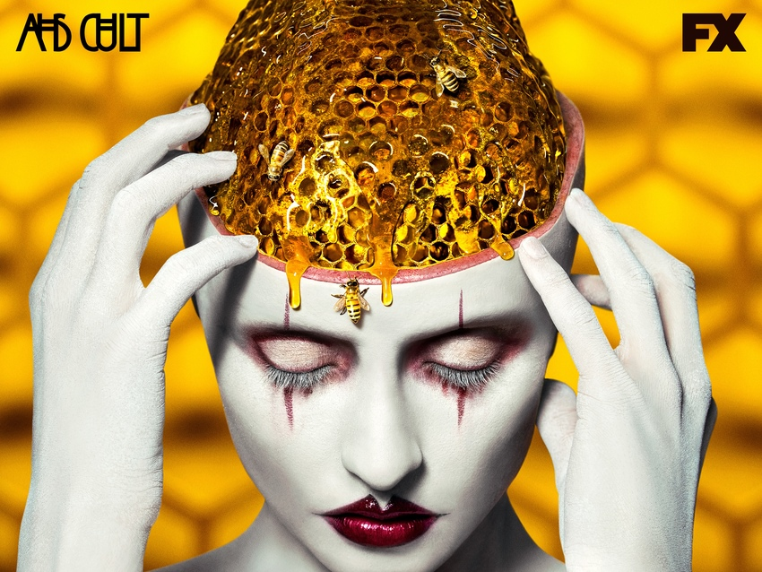

CULT

TRAMA
Cult tiene lugar en los suburbios de Detroit con Sarah Paulson como protagonista, una neoyorquina llamada Ally Mayfair Richards traumatizada por los ataques del 11 de septiembre. Ella ha desarrollado tres fobias: tripofobia, ansiedad por objetos o formas que tengan agujeros o cavidades; coulrofobia, miedo a los payasos; y hemofobia, un miedo irracional a la sangre. En los años posteriores al 11 de septiembre aprendió a dominar sus temores gracias a su esposa Ivy, interpretada por Alison Pill. Pero la victoria electoral de Donald Trump está haciendo que sus temores vuelvan a agravarse. Si el personaje de Sarah es amenazado por un grupo de payasos siniestros al estilo de 'La naranja mecánica', su esposa piensa que tuvo un episodio psicótico. La falta de apoyo hace que Sarah tome medidas drásticas para protegerse a sí misma y a su familia.
EPISODIOS
- La noche electoral
- No temas la oscuridad
- Vecinos infernales
- 9/11
- Agujeros
- El asesino el Medio Oeste
- Valerie Solanas murió por tus pecados: escoria
- Frío descontento
- Fe ciega
- Grande otra vez
REPARTO
- Sarah Paulson como Ally Mayfair Richards
- Evan Peters como Kai Anderson
- Billie Lourd como Winter Anderson
- Cheyenne Jackson como Dr. Rudy Vincent
- Alison Pill como Ivy Mayfair Richards
- Adina Porter como Beverly Hope
- Colton Haynes como Jack Samuels
- Leslie Grossman como Meadow Wilton
- Chaz Bono como Gary Longstreet
- James Morosini como R.J.
- Cooper Dodson como Oz Mayfair Richards
- Frances Conroy como Bebe Babbitt
- Billy Eichner como Harrison Wilton
- Emma Roberts como Serina Belinda